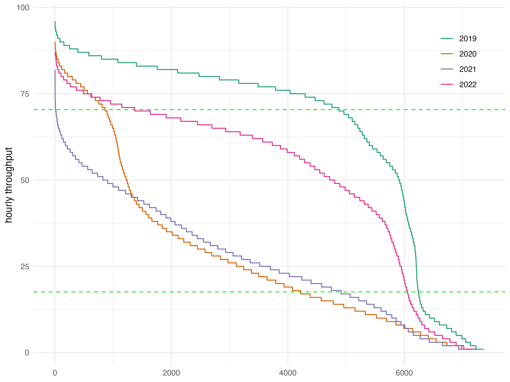

5 Capacity and Throughput
Maintaining an optimal network flow necessitates a equilibrium between airport capacity and flight demand. This section delves into assessing capacity and throughput using various key performance indicators (KPIs) at the airport level. Airspace users expect sufficient capacity provision addressing the levels of demand. With higher levels of capacity utilisation, airspace users will experience congestion and constraints (e.g. higher inefficiency, increased delay/lower punctuality and predictability). However, planning and staffing for peak situations may come at significant costs to airspace user as well. In that respect it is essential to understand the trade-off between capacity provision and capacity consumption (i.e. traffic demand) as it impacts the overall system performance. Capacity and throughput analyses are therefore showing to what extent air navigation services are capable to accommodate the demand. The previous sections showed the level of overall traffic recovery in both regions. The increasing demand put strain on the systems and local knock-on effects amplified the uncertainty and variability of the expected traffic levels. This chapter may therefore also highlight the flexibility of air navigation services to accommodate such distortions of the schedule.
5.1 Peak Declared Capacity
Peak Declared Capacity refers to the highest movement rate (arrivals and landings) at an airport using the most favourable runway configuration under optimal conditions. The capacity value might be subject to local or national decision-making processes. The indicator represents the highest number of landings an airport can accept in a one-hour period.
In both regions, peak capacity is declared by the respective authority. In Brazil, this function is performed by DECEA. Within the European region, the airport peak capacity is determined on a local or national level. The processes consider local operational constraints (e.g. political caps, noise quota and abatement procedures) and infrastructure related limitations (e.g. apron/stand availability, passenger facilities).
Figure 5.1 shows the evolution of the declared capacity for the airport services in this comparison report. Throughout the last years, no substantial change in the peak declared capacity was observed at European airports. In Brazil, on the other hand, 2019 and 2020 showed a revised capacity declaration at most of the Brazilian airports. In 2018 CGNA had developed a refined method for the determination of the runway system capacity.

The capacity of airports (and the associated runway system) is predominantly influenced by their infrastructure. The existence of independent parallel runways, e.g. Brasilia (SBBR) and Munich (EDDM), can support decisively the resulting capacity. Furthermore, operational procedures can lead to increased in airport capacity. London Heathrow (EGLL), in the past, and Guarulhos (SBGR) in recent years show that changes in operational procedures can help the airport absorb significant traffic increases or reduce the additional sequencing time in the terminal airspace. Guarulhos, for example, benefited from the implementation of segregated operations under VMC conditions, and Heathrow increased its capacity through the introduction of time-based separation on final.
In this context, Figure 5.2 shows the declared peak capacity for the study airports. As observable in the case of Amsterdam Schiphol (EHAM, 6 runways), the number of runways is not a direct indication of the maximum capacity. For example, the two-runway airports Brasilia (SBBR), London Heathrow (EGLL), and Munich (EDDM) share a similar runway system layout and range above the 3-runway systems of Barcelona (LEBL) and Zurich (LSZH). London Gatwick (EGKK) is reknown for its maximisation of its single-runway throughput.
As mentioned above, the capacity declaration/determination process takes into account the varying local conditions and constraints. It balances the need to accommodate growth vs policy priorities and public interests. A potential area for further research could be a closer investigation of the operational concepts deployed and the variations of the declared capacity with the local runway system characteristics.

5.2 Peak Arrival Throughput
This comparison report uses the GANP KPI to measure the peak arrival throughput as the 95th percentile of the hourly number of landings observed at an airport (ICAO 2019). The measure gives an indication of the achievable landing rates during “busy-hours”. It is an indication to what extent arrival traffic can be accommodated at an airport. For congested airports, the throughput provides a measure of the effectively realized capacity. Throughput is a measure of demand and therefore comprises already air traffic flow or sequencing measures applied by ATM or ATC in the en-route and terminal phase. For non-congested airports, throughput serves as a measure of showing the level of (peak) demand at this airport.
Figure 5.3 compares the observed annual peak arrival throughput at the study airports in Brazil and Europe. On average, the busiest hour of the Brazilian airports under study did not suffer a significant reduction. This signals that peak arrival demand remained fairly constant during the pandemic. An increased arrival peak throughput was serviced at Brasilia (SBBR), Campinas (SBKP), Rio de Janeiro (SBRJ), and Confins (SBCF). Services at Galeão (SBGL) observed a significant shift in the traffic pattern. The peak arrival throughput fell sharply with the pandemic and has not yet recovered. This overall picture is contrasted by the pandemic related drop of overall traffic at European airports. The overall reduction resulted in significantly lower peak hours. The recovery pattern is also visible in the peak arrival throughput behaviour.

5.3 Peak Departure Throughput
In analogy to the previous section, Figure 5.4 shows the peak departure throughput. The latter is determined as the 95th percentile of the hourly number of departures.
In Brazil, and with the exemption of Galeão, an interesting trend emerged. On average, “busy hour” throughput increased in comparison to the pre-pandemic levels. In the first chapters the overall recovery and growth of air traffic demand in Brazil was shown. With a reasonable lower departure delay performance, there exists a higher departure demand.
The pattern at the European airports follows the arrival throughput trend and on average similar values were serviced. This suggests widely homogeneous demand patterns and iteratively recovery of air traffic services at the European airports.

5.4 Declared Capacity and Peak Throughput

Comparing the peak declared (arrival) capacity and throughput serviced at the differnt airports reveals a varying picture. On average, Figure 5.5 evidences that the majority of the airports do not yet observe capacity constraints. In many instances, the achieved throughput ranges 5 to 10 flights per hour below the maximum declared capacity. In 2023, a low utilisation was observed at Galeão (SBGL), Brasilia (SBBR), and Rome Fiumicino (LIRF) where the spread between capacity and throughput exceeds 15 flights per hour. It is also noteworthy, that a subset of airport services operate at their maximum declared capacity (e.g. SBRJ, SBKP, LSZH). These airports are also characterised by a combination of complexity of the aerodrome layout and operational context. It will be interesting to study how these airports facilitate higher levels of demand. Sao Paulo (SBSP) is the only airport that serviced a slightly higher peak arrival rate than its declared capacity suggests.
The analysis of the spread of the declared capacity vs achieved throughput is useful. However, it gives now indication on how often the demand reaches the declared capacity level.

- Figure 5.6 shows the ordered set of hourly throughputs for the past years.
- this allows to identify when the achieved total throughput ranges above characteristics levels (i.e. base load index := 20% of max capcaity, peak load index := 80% of max capacity)

Figure 5.7 provides an overview of the utilisation of the available capacity during the course of a year. In Brazil, we observe a high utilisation of the capacity at Sao Paulo (SBSP) and Rio de Janeiro (SBRJ) in 2023 compared to earlier years (e.g. 2022). However, it must be noted that both aerodromes are characterised by a relatively conservative and low capacity declaration. The major hub in Brazil, SBGR shows a relatively high base-load-index (BLI), however rarely observed peak loads back in 2019. The associated values for 2022 or 2023 still range below the pre-pandemic performance. Within the European context, a high utilisation of the available system capacity was observed for London Heathrow, Frankfurt, and Gatwick in 2019 with a BLI above 0.8 and the associated PLI above 0.4 (top right quadrant). It is noteworthy that in the European region in 2023 only London Heathrow returned to similar levels of capacity utilisation. For the majority of European airports, the peak load index ranges relatively low. This suggests that most of the airports operate currently concentrated short peaks or have not yet seen a return to pre-pandemic patterns. Using a regression analysis, we can also see a difference in the trend in Europe in comparison to Brazil. Amongst the study airports, there is a higher share of airports with a more peak operating hours than in Brazil. This might be related to the overall role of the airports and underlying connectivity structure and demand levels already described in earlier chapters. Future work on understanding the drivers between operational concepts and demand may reveal further characteristics of the service provision in both systems.
5.5 Summary
Traffic growth in Brazil exceeds pre-pandemic levels. In Europe demand is about to reach the pre-COVID levels. Throughout the past years the declared capacities have not been adapted. On average the declared peak capacities at Brazilian airports tend to be lower than in Europe. This suggests that Brazil possesses more flexibility in accommodating the projected future growth of traffic at its major airports. Within the European context, novel operational concepts offer the biggest growth potential, as the prevailing separation standards and capacities of the runway system provide for an upper bound.
The observed throughput at Brazilian airports shows lower variability during the pandemic period. This suggests that demand remained concentrated during the peak operating hours. Comparing the utilisation of the capacity on the basis of a novel indicator reveals interesting patterns. With SBSP being one of the most constraint aerodrome facilities, but seeing the available capacity regularly utilised across the years and reaching pre-pandemic levels.
On average the declared arrival capacity is commensurate with the peak traffic observed at the airports. This suggests that - at the time being - runway system capacities are not a limiting factor for servicing traffic in both regions. It will be interesting to study to what extent the various operational procedures applied across the airport support or impede the projected recovery and growth of air traffic.